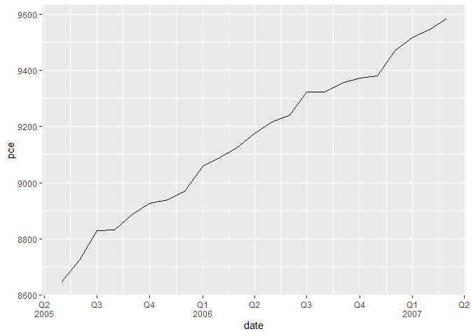

The goal of mcrutils is to …
Installation
You can install the development version of mcrutils from GitHub with:
# install.packages("pak")
pak::pak("mcaselli/mcrutils")Examples
Data cleaning
For data frames or tibbles that have character or factor columns storing logical data, as may happen when reading from a database, CSV, or Excel file, use normalize_logicals() to find and convert these columns to logical type. This is a nice one-liner in a dplyr pipe
library(mcrutils)
library(dplyr)
#>
#> Attaching package: 'dplyr'
#> The following objects are masked from 'package:stats':
#>
#> filter, lag
#> The following objects are masked from 'package:base':
#>
#> intersect, setdiff, setequal, union
ugly_data <- tibble(
logical_char = c("T", "F", "T"),
logical_factor = factor(c("TRUE", "FALSE", "TRUE")),
non_logical_char = c("a", "b", "c"),
non_logical_factor = factor(c("x", "y", "z")),
mixed_char = c("T", "F", "a"),
mixed_factor = factor(c("TRUE", "FALSE", "x")),
numeric_col = c(1.1, 2.2, 3.3),
stringsAsFactors = FALSE
)
ugly_data |> normalize_logicals()
#> Converted "logical_char" and "logical_factor" columns to logical.
#> # A tibble: 3 × 8
#> logical_char logical_factor non_logical_char non_logical_factor mixed_char
#> <lgl> <lgl> <chr> <fct> <chr>
#> 1 TRUE TRUE a x T
#> 2 FALSE FALSE b y F
#> 3 TRUE TRUE c z a
#> # ℹ 3 more variables: mixed_factor <fct>, numeric_col <dbl>,
#> # stringsAsFactors <lgl>Year-to-date helpers
mcrutils provides a handful functions that can be helpful in creating year-to-date analyses
With ytd_bounds(), quickly find the date bounds of the latest year-to-date period in vector of dates, possibly spanning multiple years:
c(
"2023-01-01", "2023-06-15", "2023-12-31",
"2024-01-01", "2024-03-15", "2024-07-15"
) |>
as.Date() |>
ytd_bounds()
#> [1] "2024-01-01" "2024-07-15"is_ytd_comparable() is a logical vector that indicates whether the dates in a vector are within a year-to-date period relative to a given end_date.
Below we have 2.5 years of historical sales data ending on June 1, 2025. How were the sales in the comparable period of 2024 and 2023?
library(dplyr)
set.seed(123)
sales <- data.frame(
date = seq(
to = as.Date("2025-06-01"),
by = "month",
length.out = 30
),
amount = rpois(30, lambda = 100)
)
head(sales)
#> date amount
#> 1 2023-01-01 94
#> 2 2023-02-01 111
#> 3 2023-03-01 83
#> 4 2023-04-01 101
#> 5 2023-05-01 117
#> 6 2023-06-01 104
sales |>
group_by(year = lubridate::year(date)) |>
summarise(annual_sales = sum(amount))
#> # A tibble: 3 × 2
#> year annual_sales
#> <dbl> <int>
#> 1 2023 1199
#> 2 2024 1166
#> 3 2025 600How were the year-to-date sales in the comparable period of 2024 and 2023?
(bounds <- ytd_bounds(sales$date))
#> [1] "2025-01-01" "2025-06-01"
sales |>
filter(is_ytd_comparable(date, max(bounds))) |>
group_by(year = lubridate::year(date)) |>
summarise(ytd_sales = sum(amount))
#> # A tibble: 3 × 2
#> year ytd_sales
#> <dbl> <int>
#> 1 2023 610
#> 2 2024 594
#> 3 2025 600With py_dates() you can rollback a vector of dates to the same period in the previous year, moving any fictitious dates to the prior valid day.
one-line datatables
auto_dt() is a one-line function that creates a DT::datatable object from a data frame or tibble, and applies percent, currency, and round formatting to numeric columns, guessing the correct format from the data type and column names. The datatable has filters at the top and no rownames.
tribble(
~product, ~weight, ~revenue, ~growth_pct,
"Widget A", 13.53, 1023.21, 0.051,
"Widget B", 22.61, 150.24, 0.103,
"Widget C", 40.54, 502.26, 0.021,
"Widget D", 34.21, 2000.95, 0.154
) |>
mutate(product = as.factor(product)) |>
auto_dt(numeric_digits = 1, pct_digits = 0)
Quarterly breaks and labels
scales::label_date_short() is a great function for labeling dates in ggplot2, but unfortunately it can’t support quarterly breaks and labels out of the box.
mcrutils provides a set of functions to create quarterly breaks and labels for date scales in ggplot2. The breaks_quarters() function generates breaks for quarters, and label_quarters_short() generates minimal labels for these breaks in a two-line format (like scales::label_date_short()), labeling every quarter, but only including the year when it changes from the previous label.
library(ggplot2)
economics |>
filter(date >= "2005-02-01", date <= "2007-03-01") |>
ggplot(aes(date, pce)) +
geom_line() +
scale_x_date(
breaks = breaks_quarters(),
labels = label_quarters_short()
) +
labs(title="Automatic Quarterly Breaks",
subtitle ="with concise labels") +
theme(panel.grid.minor.x = element_blank())
The automatic version of breaks_quarters() tries to return a reasonable number of breaks over a wide range of dates, down-sampling to semesters and years as needed.
economics |>
filter(date >= "2005-05-01", date <= "2009-03-01") |>
ggplot(aes(date, pce)) +
geom_line() +
scale_x_date(
breaks = breaks_quarters(),
labels = label_quarters_short()
) +
labs(title="Switching to semesters for longer ranges",
subtitle = "always labelling Q1/Q3, never Q2/Q4") +
theme(panel.grid.minor.x = element_blank())
economics |>
filter(date >= "2000-05-01", date <= "2010-03-01") |>
ggplot(aes(date, pce)) +
geom_line() +
scale_x_date(
breaks = breaks_quarters(),
labels = label_quarters_short()
) +
labs(title="Switching to yearly for very long ranges",
subtitle = "rather silly") +
theme(panel.grid.minor.x = element_blank())
With very long date ranges like this, you are likely better off switching from these quarterly functions to the more standard date breaks and labels in ggplot2:
You can force a fixed break width:
economics |>
filter(date >= "2005-02-01", date <= "2008-12-01") |>
ggplot(aes(date, pce)) +
geom_line() +
scale_x_date(
breaks = breaks_quarters(width = "3 months"),
labels = label_quarters_short()
) +
labs(title="Fixed quarterly breaks") +
theme(panel.grid.minor.x = element_blank())